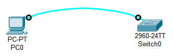
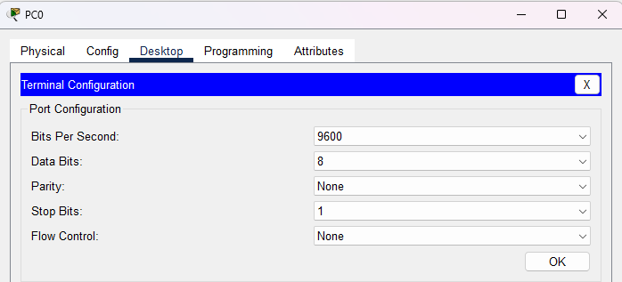
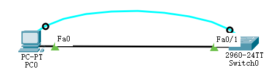

计算机网络实验
Network
- 实验学时
- 2
- 实验类型
- 验证型
- 实验题目
- 交换机 Switch
- 实验目的
- 实验内容
- 交换机常用命令
- 交换机基本配置
- 局域网 LAN
- 虚拟局域网 VLAN
- 实验器材
- 前置知识
- 使用步骤
- 构建网络拓扑
3层架构
- 接入交换机 (2960)：划分 VLAN，将终端端口划入对应 VLAN
- 汇聚交换机 (3560)：配置 VLAN 接口（SVI），实现 VLAN 间路由；配置 Trunk 连接核心
- 核心交换机 (3560)：配置路由（静态或 OSPF），连接汇聚和出口
- 出口路由器 (2911)：配置 NAT，默认路由指向外部网络
- 终端设备：配置 IP 地址和默认网关
- 参考效果和参考命令
- 拓展与思考

- 搭建拓扑：利用串口线（console）分别连接主机 PC0 和交换机 Switch0 的串口
- 打开：PC0 → 桌面（Desktop）→ 终端程序（terminal），使用默认的参数，单击 "OK"，连接交换机；提示按回车 Return 开始
- 修改主机名为 net2026
- 设置特权密码；先查看命令再设置
- 返回用户模式；先 end，再 exit
- 进入特权模式，提示输入密码
- 取消特权密码；进入特权的全局配置模式
- 还原主机名
- 查看其它感兴趣的命令 – 配合?使用
- 要成功地建立 Telnet 连接，除了要求掌握远程计算机上的账号和密码外，还需要远程计算机开启“Telnet服务”，并去除 NTLM 验证
- 也可以使用专门的 Telnet 工具来进行连接，比如STERM，CTERM等工具（win11程序和应用可选功能更多window功能）
- 学完网络层再回来做这个实验
- 搭建拓扑
- 使用配置设置特权密码
- 配置 telnet 远程登陆密码
vty：Virtual Teletype Terminal，表示虚拟电信终端
vty 0 4：表示允许5个线路/用户远程登陆该设备；默认至少4个；最多15个
- 管理 IP 地址
交换机 Switch0 和主机 PC0 的 IP 地址必须是同一网段
通常配置 vlan1 为管理地址
- 查看交换机配置
- 配置PC并远程登陆交换机
串口初始化配置交换机


Switch> Switch>en Switch#conf ter Enter configuration commands, one per line. End with CNTL/Z. Switch(config)#hostname net2026 net2026(config)#
net2026(config)#enable ? password Assign the privileged level password secret Assign the privileged level secret net2026(config)#enable pass 2026
net2026>en Password:
net2026(config)#no ena pass
net2026(config)#no hostname
Telnet 远程登陆交换机

Switch(config)#enable password 2026
Switch(config)#line vty 0 4 Switch(config-line)#password xit Switch(config-line)#login
Switch(config)#int vlan 1 Switch(config-if)#ip add 192.168.1.254 255.255.255.0 Switch(config-if)#no shutdown Switch#write
Switch#show running-config